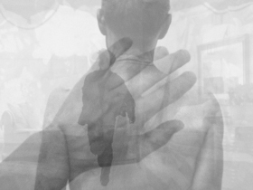

Blinder

Tim Leyendekker – NL/BRA 2015
14 min – no dialogue
Sc+DoP+P: Tim Leyendekker – With Vitório Abe, Antônio Lima
BLINDER consists of 6386 photographs representing all the objects and characters featured in the English translation of José Saramagoʼs 1995 novel Ensaio sobre a Cegueira (Blindness). In conceptual parallel with these images, the filmʼs soundtrack is comprised of 6386 audio samples extracted from Blindness, Fernando Meirellesʼs 2008 feature film based upon Saramagoʼs novel.
monday 12 oct 10.30 pm werkstattkino
Tim Leyendekker (1973, Netherlands) gained his master's degree in Fine Arts at the Sandberg Institute in Amsterdam. He produces conceptual video art and projections in which he explores the conceptual and formal boundaries of cinema as a narrative medium. He is also a photographer.
Films (selection) (hectaren) 2001 – Survival (prayer #1 prayer #2) 2002 – How The West Was Won And Where It Got Us 2003 – Still 2006 – Opening Night 2009 – the Healers 2010 – Blinder 2015